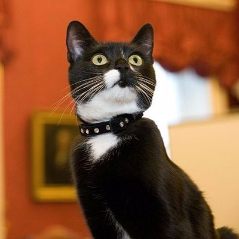
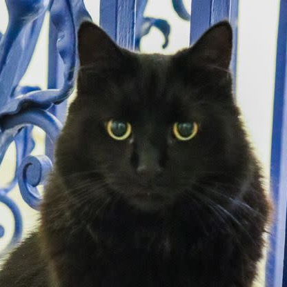

About the London Mousers & Co.
The London Mousers are an organization of cats with the special job of catching any rodents and other animals who infest the various governmental offices of Westminster.
Current Members:


Evie May
Mouser of the Cabinet Office
Assumed Office 9 Dec. 2016

Ossie May
Mouser of the Cabinet Office
Assumed Office 9 Dec. 2016